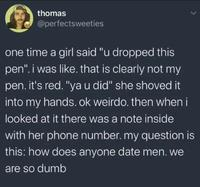
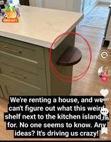

0

New Zealand startup Zenno Astronautics has completed the first orbital test of its "Supertorquer," a shoebox-sized superconducting magnet system that uses solar power and Earth's magnetic field to help control a satellite without fuel. The company says the technology could eventually support fuel-free satellite maneuvers, docking, deep-space trajectory changes, and even magnetic radiation shielding for astronauts. Space Magazine reports: The tests began shortly after Mira's launch in November last year aboard the SpaceX Transporter 12 mission and saw the shoebox-size device perform with flying colors, Zenno Astronautics CEO and founder Max Arshavsky, told Space.com. "It's a technology that allows a spacecraft to not tumble violently in space and point in the right direction," Arshavsky said. "The unit has multiple super-conducting magnets that are positioned in different axes. When we power up the magnets, they generate a magnetic field, which interacts with Earth's magnetic field, and because we can control the magnetic field on the satellite, we can control the way in which it turns with respect to Earth."
Superconducting magnets are made of coils of superconducting wire that have zero electrical resistance and can therefore conduct much larger currents than normal wires. That larger current translates into a greater magnetic force. There is, however, a catch: Superconducting materials need to be cooled to extremely low temperatures to gain their wonder properties. [...] The unit housing the superconducting magnets is wrapped in layers of insulation and fitted with a heat pump that removes all the excess heat from the system. Every time the satellite needs a push, the superconducting coils power up, drawing energy from a battery charged by the satellite's solar panels.
"It's converting solar energy straight into useful work," Arshavsky said. "Energy is the one thing that is abundant in space, and you can use it to energize the magnet to create a magnetic acceleration device. It gives you acceleration without fuel." In the future, Zenno Astronautics plans to launch larger systems that could enable spacecraft to dock in space or conduct close proximity operations using just the power of their solar-powered superconducting magnets. Arshavsky envisions powerful magnets that could, in the future, propel spacecraft on missions to the moon and Mars using only solar power.
Read more of this story at Slashdot.
An anonymous reader quotes a report from Wired: Meta launched its inaugural AI image model from the Meta Superintelligence Labs on Tuesday, its effort to compete with the likes of OpenAI's GPT Images 2.0 and Google's Nano Banana 2 in the AI image generation race. The new model, called Muse Image, rolled out with deep integrations woven into the Instagram app. As part of this update, public Instagram profiles are now automatically opted into being fodder for generative AI remixes. All someone has to do is tag your account's profile in a prompt -- if it's public -- and they can use Meta AI to generate an image using your likeness.
Meta positions this feature as a cheeky way to personalize generations with images of real people. "Whether you want to design a custom event invitation, mock up a collaborative creative concept, or generate a personalized graphic, tagging a username lets Meta AI use public photos to build a visual that's ready to post," reads one of Meta's announcement blogs about the new AI tool. [...] Instagram's help center site includes more details about how this feature will impact users, saying that "people may be able to create content with your Instagram content using AI features at Meta" if you leave your account public and on the default settings. (A previously archived version of this page from 2025 does not include similar, AI-focused language.) Instagram users who want to stop others from using their public posts for AI images (without switching your account to private) must manually disable the options under the app's "Sharing and reuse" settings. However, turning off the setting only blocks future AI generations; any AI images already created from their content will remain.
Meta also says users will not be notified when others create AI-generated content using their posts.
Read more of this story at Slashdot.
Doom developer id Software is reportedly laying off about half its staff as part of Microsoft's broader Xbox cuts. The reported layoffs potentially affects around 90 employees. Engadget reports: While neither Microsoft nor id Software have formally acknowledged the layoffs, one former member of the studio's staff, Michael Maynard, has echoed the 50 percent figure on LinkedIn. According to at least one of Game Developer's sources, that could translate to around 90 job cuts, though it's so far unclear what departments at id Software have been hit hardest.
[...] Bloomberg reported yesterday that as part of the "reset" at Xbox, ZeniMax Media, the parent company of id Software, will be focusing on its biggest franchises -- like The Elder Scrolls, Fallout, Wolfenstein and Doom -- going forward. It's possible that motivated the cuts to id Software, but the developer at least outwardly appears to be already heavily focused on Doom. The studio launched Doom: The Dark Ages in 2025 and an expansion to the game on July 7, 2026. Whatever the reason, the cuts at Xbox aren't over: While Microsoft eliminated 1,600 roles alongside the announcement that Xbox is restructuring, it still plans to lay off another 1,600 employees over the coming months.
Read more of this story at Slashdot.
Microsoft will turn on Windows settings backup and restore by default for eligible Windows 11 business devices outside the EU, starting with Windows 11 26H2. The Register reports:
Now dubbed "Windows settings backup and restore," the service backs up a device's settings and a list of installed Microsoft Store apps, which can then be restored to a new device. Microsoft gave a use case for the technology: "Imagine a lost laptop, a hardware refresh, or an unexpected reset. These are some of the moments when your users need backup most. And that's rarely when anyone wants to discover that backup was never turned on."
However, some organizations might not want it on. Perhaps those with strict privacy or data sovereignty requirements, or those regulated by the EU Digital Markets Act (DMA), for whom the default-on behavior won't apply. Windows 11 25H2 and earlier are also excluded, as is any device with a backup policy that explicitly disables the setting. Everything else running Windows 11 26H1 will get switched on after a feature update, and the same applies to 26H2, currently with Windows Insiders in the Experimental channel.
Administrators might reasonably be wary of this being opt-out rather than opt-in. Backups are useful, but Microsoft is clear that this is not a comprehensive backup solution, calling it only "one step in a broader Windows resiliency effort." The implications still need consideration. An opt-out setting that quietly ships settings data off-device is exactly the sort of thing that adds to administrators' workloads rather than lightening them.
Read more of this story at Slashdot.
Samsung's chip division is projected to earn more in 2026 than it made across its previous 40 years in semiconductors, driven by soaring AI-fueled demand for memory and storage. The company's latest quarterly operating profit reportedly topped Nvidia's, making Samsung the world's most profitable tech company for the period. Tom's Hardware reports: Brokerage consensus puts Samsung's full-year 2026 operating profit near 300 trillion won ($196 billion), and its second-quarter figure at about 84.6 trillion won ($55.1 billion). Samsung easily beat the consensus with $58.5 billion when it posted preliminary results on July 7, overtaking Nvidia's most recent quarterly operating profit of $53.54 billion and becoming the most profitable technology company in the world for the period, on the back of AI-driven memory demand.
Samsung's DS division booked 53.7 trillion won ($35.1 billion) of the company's 57.2 trillion won in total operating profit during the first quarter of 2026, roughly 94% of the total, which is why the division's projection sits so close to Samsung's full-year consensus. "This year's profit will exceed the cumulative profit generated over the past 40 years since we entered the semiconductor business," Kim Yong-Kwan told staff, scoping the claim to the chip business rather than the wider conglomerate. Further reading: Samsung Chip Workers To Get $340,000 Average Bonus In AI Boom
Read more of this story at Slashdot.
An anonymous reader quotes a report from Reuters: Chinese startup DeepSeek is developing its own AI chip, according to three people familiar with the matter, a push that could reduce its reliance on Nvidia and Huawei chips, which it has depended on to train and run its globally popular models. The chip is designed for inference -- the stage of AI computing in which a trained model generates responses for users -- rather than for training new models, the sources said. If successful, DeepSeek's expansion into semiconductor development would mark a major strategic shift for a company widely hailed in China as the country's AI champion, potentially adding to challenges faced by Chinese tech giant Huawei.
Read more of this story at Slashdot.
JPMorgan, Bank of America, Wells Fargo, PNC, and other major banks have reportedly explored acquiring Fiserv's debit-card networks, STAR and Accel, in a move that could help them bypass federal caps on debit-card transaction fees. A law limits the fees big banks can charge merchants, but only if the transactions are routed through an outside network. There are no caps on these interchange fees over a bank-owned network, however. The Wall Street Journal reports: When Capital One Financial bought Discover Financial in a $50.6 billion deal, it got a network that cut out the need for a middleman in card transactions and allowed it to deal more directly with merchants. Now, big banks are looking on with envy because owning a network can mean exemption from a federal law that caps debit-card fees. Those fees collectively amount to billions of dollars each year across the industry, but banks have long complained the government-defined cap limits their ability to offer customers debit-card rewards and other services. Some have been exploring a small deal that could upend the rules, though they are worried about political backlash if they try.
Big banks including JPMorgan Chase, Bank of America, Wells Fargo and PNC Financial Services Group have in recent months held preliminary and tentative discussions about a deal to acquire a network owned by the financial-technology company Fiserv, according to people familiar with the matter. There is no certainty a deal will happen. Several of the banks that looked at the Fiserv network have already decided it would be unlikely for them to move forward, some of the people said. Some have privately expressed concern that such a deal could prompt backlash from lawmakers, regulators and merchants, the people added.
Read more of this story at Slashdot.
A criminal complaint against alleged Scattered Spider member Peter Stokes revealed that Microsoft can associate Windows activity with a persistent "Global Device ID," which investigators used to link his PC to online activity connected to a hack. While unique device IDs are common, the case has raised privacy concerns because the identifier can apparently persist across updates, has no simple opt-out, and may allow Microsoft to connect a Windows installation to activity on third-party services. PCMag reports: Last week, the U.S. announced it had extradited 19-year-old Peter Stokes from Europe for allegedly being a member of the notorious hacking group Scattered Spider. But the case stands out because Microsoft played a key role in linking Stokes to the suspected hacking crimes, according to an unsealed criminal complaint. Stokes allegedly hacked an unnamed luxury jewelry retailer in May 2025 while using a VPN. The 39-page criminal complaint shows the FBI used Microsoft records to discover that his IP address was associated with a Microsoft device identifier known as Global Device ID (GDID).
"According to a Microsoft representative, a Global Device Identifier in the Windows ecosystem is a persistent, device-level identifier designed to uniquely identify an installation of a Windows operating system on a device, either a physical device (e.g., a mobile phone or laptop) or virtual machine, across certain Microsoft services and scenarios," the complaint explains. The global device ID isn't exactly surprising, given that it's standard practice to assign a unique ID to each account or device so a tech provider can recognize and distinguish between them. But the complaint reveals Microsoft can associate the GDID with third-party services and the timing as well, giving Redmond a way to theoretically track a user's online activity. In other words, Redmond might be able to track the online activity of your Windows PC without third-party browser cookies.
Stokes was discovered exploiting a web development tool called ngrok to bypass the jewelry retailer's network defenses. The complaint says Microsoft had records showing that on May 12, 2025, at 19:21 UTC, the GDID associated with Stokes' computer "accessed, among other ngrok pages, 'https://dashboard[.]ngrok.com/signup,' the ngrok page to set up an ngrok account." The document adds that Microsoft records also showed the GDID accessing "multiple sites" from servers at Tzulo, a web hosting provider, to help pull off the hack. Hence, the fact that federal investigators used the Microsoft identifier to nab a suspected hacker is raising concerns that it could be abused for other surveillance purposes. "Microsoft Windows is surveillance software," cybersecurity expert Matthew Hickey alleged in a tweet.
Read more of this story at Slashdot.
A new study suggests multilingualism may slow brain aging, with bilingual people showing brains that appear about six years younger than monolingual speakers and people who speak four languages showing brains that appear up to 13 years younger. Researchers say earlier language learning and higher proficiency appear to strengthen the effect. The Guardian reports: Our brains are made up of billions of nerve cells that communicate with one another. But as we get older, the connectivity in our brains often deteriorates, causing memory and speed of thought to decline. While previous research had observed that people from European countries with greater language proficiency tended to age more slowly, this study measured the impact of speaking languages on individual brains. Scientists in Spain, Chile, Argentina and Dublin compared people living in the Basque region -- characterized by high levels of multilingualism -- who spoke Spanish, Basque, French and/or English.
To measure neurological age, the scientists used magnetoencephalography to measure the brain activity of 728 people with varying ages and levels of linguistic ability. They then used AI to process the results to calculate a normal level of brain connectivity at any given age. A second unrelated group of 144 people were then scanned and compared, comprising equal numbers of people speaking one, two, three or four languages.
Dr Lucia Amoruso, from the Basque Center on Cognition, Brain and Language in San Sebastian, said: "In simple terms, people who spoke more languages tended to have brains that looked younger than expected for their chronological age. The effect was not only related to the number of languages spoken. Higher language proficiency and earlier acquisition of a second language were also associated with more delayed brain ageing. This suggests that multilingual experience matters as a gradient: it is not simply about being bilingual or not, but about the depth and duration of language experience."
Read more of this story at Slashdot.
CISA is reportedly using Anthropic's Mythos model to scan government code repositories for security vulnerabilities, with sources saying the audits have already found numerous bugs. Reuters reports: The scanning is being done by CISA's Attack Surface Evaluation team, according to one of the sources. The team is a group within CISA that conducts digital security assessments and hacking exercises across government. Two of the sources said the audits had already uncovered a large number of vulnerabilities but did not elaborate. Reuters could not establish exactly how much government code the team had gone through or the nature or severity of the bugs it discovered.
[...] The National Security Agency, the U.S. government's powerful eavesdropping agency, has been using Mythos as far back as April despite the blacklist, Axios has reported. Late last month, the New York Times said that NSA analysts had been testing Mythos in classified settings and coming away impressed with its capabilities. But when Anthropic rolled out a public version of Mythos called Fable, which included what it described as cybersecurity safeguards, the White House suddenly demanded that it ban foreigners from running it. This triggered a global shutdown of the model that was lifted only last week.
Read more of this story at Slashdot.
0
GitHub is offering a limited run of 1,000 CD-ROM copies of public repositories as a pro-physical-media jab at Sony's plan to stop producing PlayStation game discs in 2028. Tom's Hardware reports: The coding and collaboration platform, owned by Microsoft, states that "In light of recent developments in physical media, GitHub is proud to announce that you can now obtain your public repo on CD-ROM." Moreover, it appeals to the human side of computing, adding the emotive line "Keep it. Lend it to friends. Pass it on to your children." It isn't April 1st, so thankfully this is no joke. However, if you check out the above-linked GitHub Your Code, On a CD offer page, it quickly becomes clear this is a very limited in time/scope stunt.
"Order a burned CD of your own public GitHub repo. Yes, a real physical disc you can hold in your hands, no download required," begins the spiel. But this is a very limited run of 1,000 discs, with applications required between July 2 and July 6 (inclusive). Limit one per person, with availability varying between country/region.
"Your code is physically yours, forever. Until you lose it, let's be real," says GitHub. At best, these CDs will be framed and put on a wall, some becoming collector's items or eBay money spinners (discs like 0001 or 0888 would be good ones, if they are numbered). Also, many will be lost or eventually/accidentally discarded, as GitHub seems to know. So this 'protest' is arguably 1,000 doses of expensively shipped e-waste.
Read more of this story at Slashdot.
An anonymous reader quotes a report from the New York Times: An Australian beach community was confused -- and later delighted -- by the discovery of six metallic-looking spheres that washed ashore last week. The mystery, and the ensuing attention, prompted a bunch of alien jokes from local residents and businesses. But Australia's space agency put the speculation to rest on Monday, saying that the spheres appeared to be rocket debris that had recently re-entered the atmosphere from orbit.
The objects were found on Forrest Beach in the northeastern state of Queensland over the weekend, the state's fire department said. Residents described them as being about twice the size of a basketball. "The recovered objects appear to be pressure vessels from a space launch vehicle," the Australian Space Agency said in a statement, adding that they were "consistent with debris from a foreign rocket body." The agency said that it had identified the likely source of the objects, without providing further details, and was working with international authorities to confirm the vehicle from which the debris originated.
Read more of this story at Slashdot.
Japan's Hayabusa2 probe captured rare close-up images of near-Earth asteroid Torifune, revealing a snowman-like shape made of two joined lobes. Phys.org reports: The fridge-sized Hayabusa2 skimmed asteroid Torifune on Sunday in a mission that demonstrated the ability to deflect a potentially dangerous space rock away from Earth. A new image released by the Japan Aerospace Exploration Agency (JAXA) on Monday could aid such efforts, as researchers say near-Earth asteroids vary in their size, shape and surface characteristics.
"The moment I actually saw this image and the scientific data -- it really gave me goosebumps," JAXA scientist Yuya Mimasu told reporters, adding the asteroid "personally looked like a snowman." The black-and-white image, captured by a telescopic camera, showed what appeared to be two round objects joined together. "You can actually see the rocks... I really hadn't expected to be able to take a photo like this, so I'm absolutely over the moon," he said.
[...] Moving at a speed of more than 18,000 kilometers (11,185 miles) per hour, the probe was due to fly within 800 meters (2,625 feet) of the asteroid, but JAXA said it would analyze the distance later. If confirmed, the mission would be one of the closest flybys of a near-Earth asteroid ever. JAXA also said Monday it succeeded in acquiring data from three other devices that can measure the distance from the asteroid and examine the existence of water.
Read more of this story at Slashdot.
The FCC plans to roll back broadband label rules that require ISPs to itemize all passthrough fees. Under the proposal, providers could instead list a single "up to" amount for location-based charges. It would also allow ISPs to link to pricing labels rather than display them prominently, while eliminating machine-readable pricing files. Ars Technica reports: ISPs routinely advertise prices much lower than those actually charged to consumers on their monthly bills. One method of raising monthly bill prices above advertised rates is to tack on fees that, ISPs claim, are used to offset charges imposed by local governments. ISPs would be well within their rights to advertise accurate monthly prices and charge those exact prices on monthly bills. But because ISPs rarely do that, the FCC has required them to make specific price disclosures to consumers for the past decade. The Biden-era FCC updated the broadband-label rules to require that ISPs "itemize on the label (PDF) all discretionary monthly fees that the provider passes through to the consumer." The change drew protest from Comcast and other ISPs that complained bitterly about the complexity of listing all the hidden fees they had chosen to charge.
Under Chairman Brendan Carr, the Trump FCC has steadily whittled away at requirements imposed under Democrats. An order (PDF) released in draft form last week would eliminate the requirement to itemize passthrough fees and let ISPs list them in a single "up to" amount. The "up to" amount can include both government fees and fees charged by non-government entities such as owners of utility poles. "Rather than continuing to require providers to itemize 'passthrough fees' that can vary by location, we allow providers to display such fees in the aggregate, either as a maximum or 'up to' amount for the total fees applicable in any location where the service plan is offered, or as the exact total of such fees assessed in a particular location," the FCC draft order said.
The order to be voted on later this month includes a few other changes that will please ISPs and their lobby groups. ISPs will be allowed to provide links to price labels instead of displaying the full labels prominently on ordering pages and account portals, and will be allowed to stop making the price-label information available in machine-readable spreadsheets. The FCC is also relaxing the requirement that price information be available over the phone. The FCC said the change will "allow phone sales representatives to present label information conversationally, as a summary of key label fields, rather than require verbatim recitation."
The changes have been in the works since October 2025, when the FCC issued a Notice of Proposed Rulemaking to let the public submit comments on the proposals. The outcome of that process is the draft order, which will be voted on at the FCC's July 22 meeting and take effect 30 days after it is published in the Federal Register. There are many types of passthrough fees that ISPs will be able to stop listing individually and roll into the "up to" amount. The FCC defined the fees as follows, saying they include just about anything that isn't a tax [...]. Another planned change will eliminate a requirement that providers archive all labels for at least two years after a service plan is no longer available. The Utility Reform Network, an advocacy group, told the FCC that the archived labels provide crucial data about how prices and services change over time, and that machine-readable labels are important for affordability research and information accessibility.
Read more of this story at Slashdot.
An anonymous reader quotes a report from TechCrunch: These may be the last days of Amazon's Mechanical Turk. An announcement on the Mechanical Turk website says that on July 30, 2026, the crowdsourcing service will close to new customers. Amazon Web Services says the decision was made after "careful consideration," adding, "Existing customers can continue to use the service as normal. AWS continues to invest in security and availability improvements for Mechanical Turk, but we do not plan to introduce new features." In other words, Amazon isn't completely pulling the plug, but the service is very much on life support. Further reading: Horror Stories From Inside Amazon's Mechanical Turk (2020)
Read more of this story at Slashdot.
Barratt Dewey / Tectonic Defense : Arkenstone Defense, which is building software to handle back-office work for defense tech startups, emerges from stealth with a $35M seed led by J2 Ventures — You know how we say we love the unsexy side of defense? Well, we're back with some news from the unsexiest place we can imagine …
Rajasik Mukherjee / Reuters : China's Nexchip Semiconductor says it aims to raise around $890.37M in its Hong Kong share sale by offering 216.2M shares at ~$4.12 per share — China's Nexchip Semiconductor (688249.SS) said on Wednesday it aims to raise around HK$6.98 billion ($890.37 million) in its Hong Kong share sale …
Meir Orbach / CTech : Israeli startup Alta, which develops an AI agent platform for marketing, sales, and business development teams, raised a $25M Series A led by IN Venture — The AI agent platform founded by monday.com alumni has reached $15 million in new revenue run rate after 800% revenue growth.
Jiahui Huang / Wall Street Journal : Chinese autonomous driving company Momenta saw a muted trading debut in its Hong Kong IPO, valuing the company at ~$9B, after raising $751M — Momenta's subdued start belied its strong investor demand — General Motors-backed Momenta's Hong Kong initial public offering …
Qianer Liu / The Information : Sources: China plans to let some of its biggest AI companies buy a small number of Nvidia's H200 chips to offset a domestic computing shortage in recent months — China plans to allow some of the country's biggest AI companies to buy a small number of Nvidia's H200 chips, according to two people with direct knowledge of the matter.
Benoit Berthelot / Bloomberg : Mistral launches Robostral Navigate, a hardware-agnostic robotics navigation model trained via simulation that utilizes a single camera and language prompts — Mistral AI announced a new robotics navigation model, as the French startup expands in the emerging field of physical artificial intelligence …
Rebecca Torrence / Bloomberg : Crypto VC firm Paradigm raised $1.2B, its fourth fund, to invest in areas outside of crypto, like AI and robotics; Paradigm had $11.9B in AUM at the end of 2025 — Paradigm, the venture firm founded to invest in cryptocurrency companies, has raised a new $1.2 billion fund to make more bets outside …
Bloomberg : Nvidia lost ~$1T in market value in less than two months, dropping 16% from its May all-time-high, trading at 18x forward earnings, its lowest level since 2019 — After losing roughly $1 trillion in market value in less than two months, Nvidia Corp.'s stock is the cheapest it's been since …
Madison Mills / Axios : The OpenAI Deployment Company agrees to acquire Northslope, an applied AI company founded by ex-Palantir employees, its second acquisition after buying Tomoro — The OpenAI Deployment Company agreed to acquire Northslope, an applied AI firm, OpenAI shared exclusively with Axios …
Corbin Bolies / Variety : Kaon AI, which builds personalized story worlds using its AI-based FlowGPT and Emochi tools, raised $60M from B Capital and others, and says Emochi has 2M DAUs — Kaon AI, a start-up focused on building personalized story worlds powered by generative AI for its users through its products FlowGPT and Emochi …
Radhika Rajkumar / ZDNET : Former GitHub CEO Thomas Dohmke's Entire launches a decentralized Git network to handle high coding agent traffic, with servers in the US, the EU, and Australia — ZDNET's key takeaways — Entire launched a decentralized Git network built for agents. — The company plans to open-source its backend.
Tim Culpan / Culpium : SK Hynix's IPO prospectus analysis, as it seeks to raise ~$28B on the Nasdaq: highly leveraged to HBM, deep and broad China ties, and health and safety concerns — [Opinion] The world's second-largest memory chip maker has more stories than its F-1 filing reveals — SK Hynix is going big in America.
Eugene Kim / Business Insider : Internal documents: Amazon is working on an Alexa project, codenamed Moonraker, to handle more complex, multistep tasks, projecting $100M+ in GPU costs in 2026 — Amazon's next Alexa AI upgrade may be able to handle more complex tasks. Getting there is expensive, though.
Anna Washenko / Engadget : DuckDuckGo updates its browser for iOS, Windows, and macOS to block most video ads by default, including those on YouTube, based on uBlockOrigin's filter lists — An unsubtle shot at Chrome. — DuckDuckGo announced that it can now block most video ads, particularly those on YouTube, when a video is playing in its browser.
New York Times : Sources: Jeff Bezos' Blue Origin is raising $10B at a $130B pre-money valuation, its first outside funding round, including $4B from Coatue and $2B from Bezos — The rocket company founded by Jeff Bezos is set to take on external investors for the first time, at a $130 billion valuation.